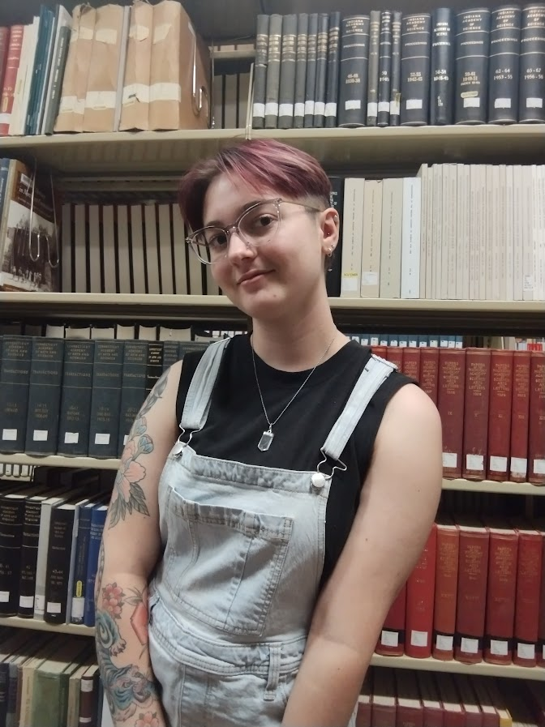
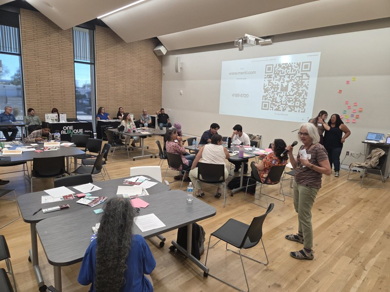
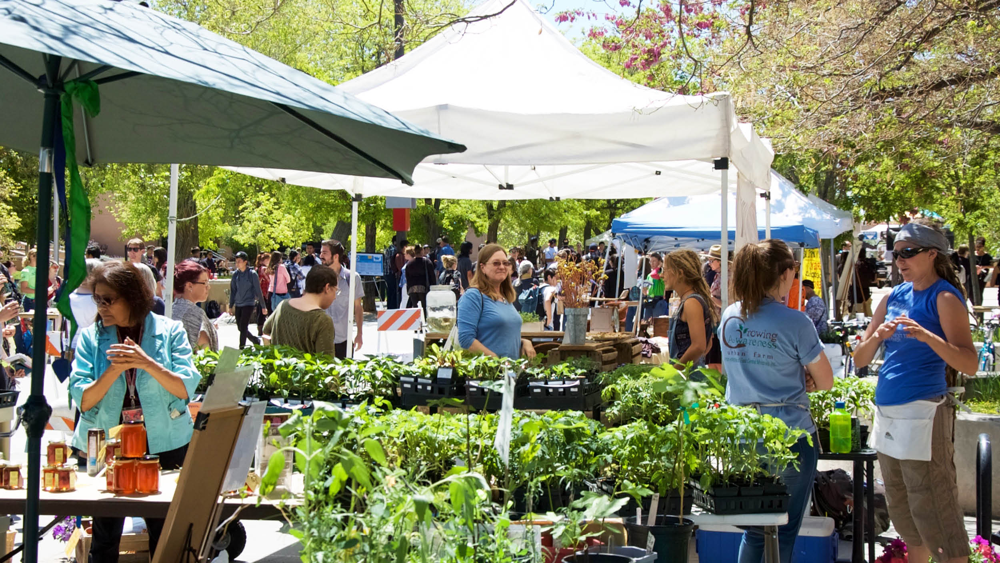
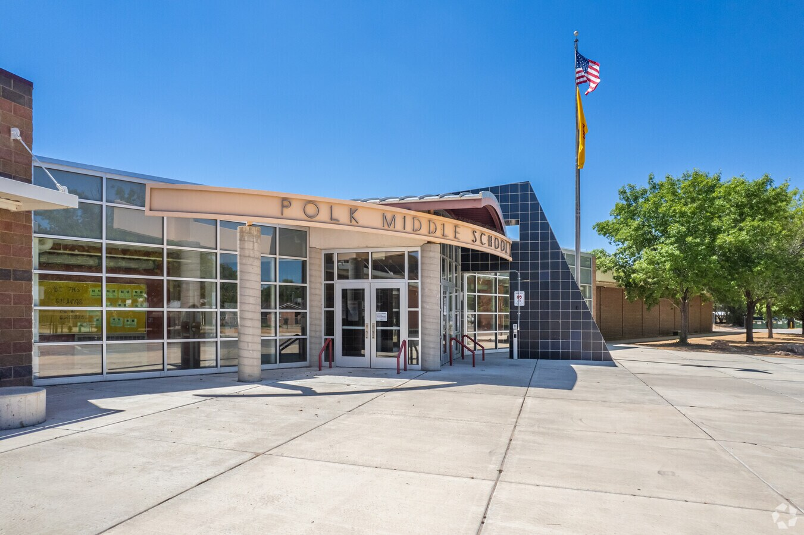

I'm a UNM student in my Junior year, working for a Bachelor's in Geography and Envrionmental Studies with a minor in Sustainability Studies. I'm interested in the local food shed, particularly in grassroots organizing and food security work! I have been involved with many volunteer projects here in Albuquerque and I'm always looking to expand.
Food Policy Council
I created and pitched policies with a team about food insecurity to City Councilor Nicole Rogers and the District 6 Food Policy Council, using community data
To learn more about The District 6 Food Policy Council, click here!
2024 UNM Sustainability Expo.
I helped organize the 2024 UNM Sustainability Expo, I contacted vendors, worked to plan a layout for the event, and planned activites! I also manned an information booth about seed bombs and local pollinators.
To learn about this year's UNM Sustainability Expo, click here!
Polk Middle School Waste Audit
I volunteered with The Ciudad Soil and Water Conservation District to conduct a waste audit at Polk Middle School to see the percentage of food waste in an average school to better understand school waste systems.
To learn more about Polk Middle School's sustainability, click here!